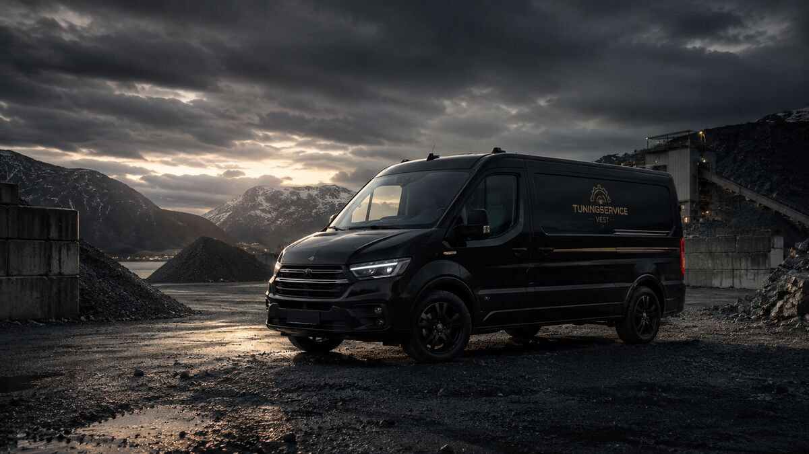
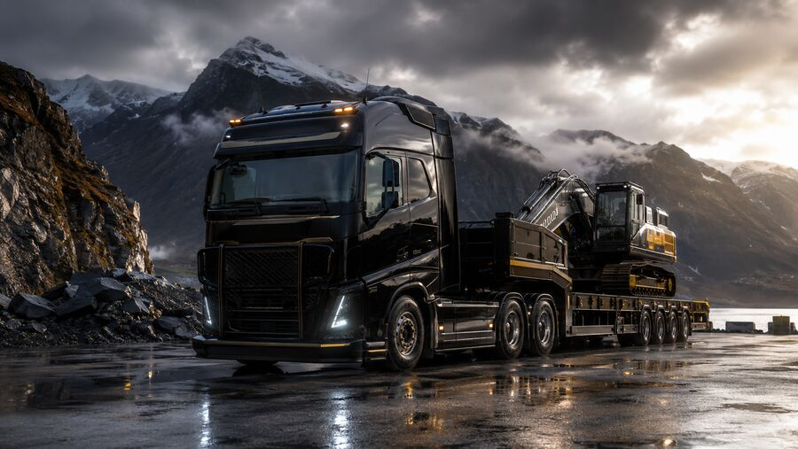
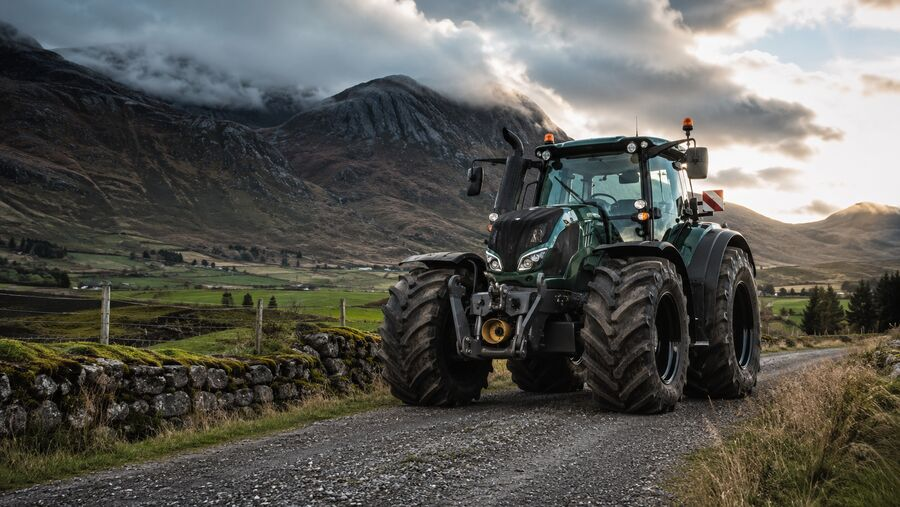
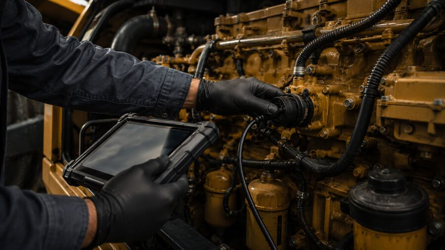

Tuningservice Vest tilbyr mobil diagnose, feilsøking, driftsstøtte og lovleg motoroptimalisering for køyretøy og maskiner i Vestland. Vi kjem til deg – mål først, skru etterpå.
Ring 948 09 710Oppslag og chat blir lagra og sende til Bjørn. Les om personvern.
Kontrollerer AI-tilgang.
Spør om tuning og tenestene våre. Bjørn stadfestar pris, kompatibilitet og garanti.
AI-en kan ta feil. Oppslag og chat blir lagra og sende til Bjørn ved avslutting eller etter fem minutt utan aktivitet. App-loggen blir sletta etter 30 dagar; e-postkopiar blir handterte separat. Sjå personvern.
Ingen val enno.
Ingen bil er slått opp.
Primærkatalogen blir føretrekt ved eit underbygd treff. Den andre katalogen er reserve. Kjeldebyte nullstiller bilvalet; effektdata blir aldri slått saman.
Varsel ved regnr-søk. Samtalelogg etter fem minutt utan aktivitet eller ved avslutting, også om fana er lukka. Lokalserveren må køyre. Ingen ekte e-post blir send.
Samtale og testførespurnader blir lagra lokalt. Ingen ekte e-post blir send.
Vi kjem til deg – redusert nedetid når det tel mest.
Vi måler og finn årsaka før noko blir bytt.
Basert i Bjørnafjorden, tilgjengeleg i heile regionen.
Feilsøking, reingjering og reparasjon av DPF, DOC, SCR og EGR-system.
Diagnose og reparasjon av AdBlue-system, NOx-sensorar, pumpe, dyse og komponentar.
Avansert diagnose med moderne utstyr – raskt og treffsikkert.
Sjå diagnose og prisar →Programmering, koding og optimalisering av styreeiningar på køyretøy og maskiner.
Vi er mobile og utfører service der maskina står – du sparer tid og pengar.
Vil du feilsøkje sjølv? Spør om diagnoseutstyr og spesialverktøy til oppdraget ditt.
Sjå utstyr til leige →Tuningservice Vest tilbyr mobil diagnose, feilsøking, driftsstøtte og lovleg motoroptimalisering for køyretøy og maskiner, med utgangspunkt i Osøyro/Bjørnafjorden.
Bak verksemda står ein mekanikar og teknikar med praktisk erfaring frå køyretøy, maskiner og elektroniske styresystem. Målet er å vere eit fleksibelt alternativ når køyretøyet eller maskina ikkje enkelt kan eller bør fraktast til verkstad.
Vi måler og finn årsaka før dyre delar blir bytte, slik at du slepp unødvendig delebyting og får ein kortare veg til korrekt avgjerd.




Spør Bjørn om tuning, diagnose eller utleige. Du treng ikkje regnr eller eit ferdig modellval for å ta kontakt.